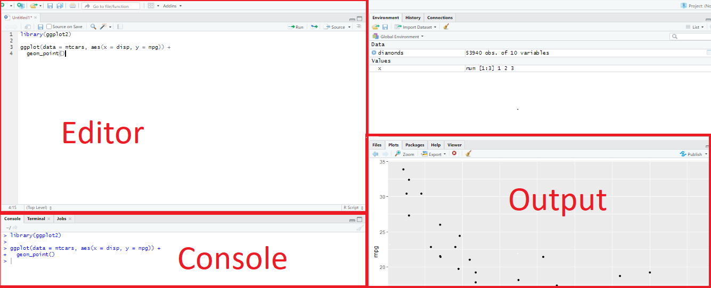
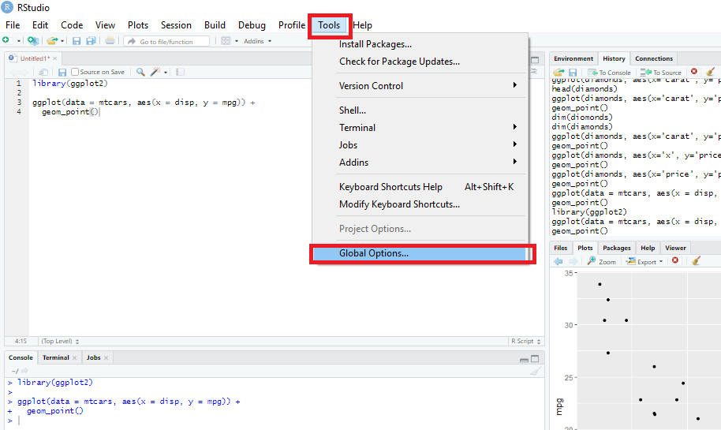
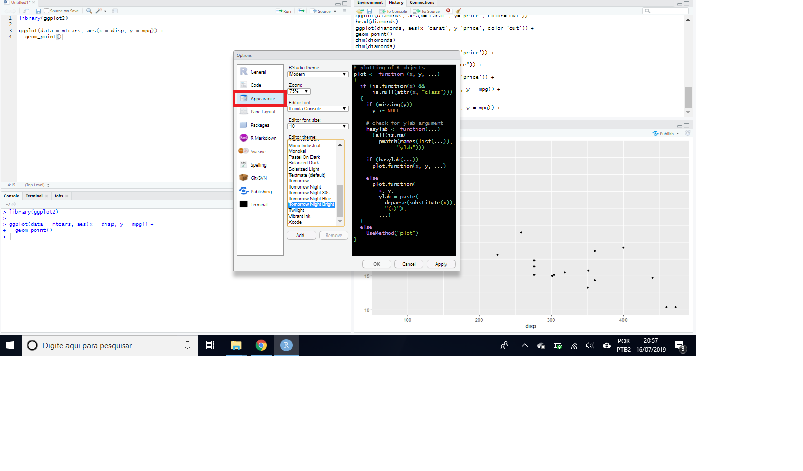

Appendix D — Primeiros passos no RStudio
O RStudio é um conjunto de ferramentas integradas projetadas (IDE - Integrated Development Environment) da linguagem R para editar e executar os códigos em R.
Tem quatro áreas, conforme a Figura @ref(fig:telarstudio1).
A seguir descrevemos melhor os painéis e abas do RStudio:
Editor/Scripts: é onde escrever os códigos. Arquivos do tipo .R.
Console: executar os comandos e ver os resultados.
Enviroment: painel com todos os objetos criados.
History: história dos comandos executados.
Files: navegar em pastas e arquivos.
Plots: onde os gráficos serão apresentados.
Packages: pacotes instalados (sem ticar) e habilitados (ticados).
Help: retorna o tutorial de ajuda do comando solicitado com help() ou ?comando. Ver melhor como pedir ajuda no R no final deste capítulo.
O usuário pode alterar a aparência do RStudio, como fonte e cor. Como exemplo, as Figuras @ref(fig:telarstudio2) e @ref(fig:telarstudio3) apresentam os passos para mudar o tema do script. No exemplo, deixar com fundo preto.


Ainda no menu Tools –> Global Options –> Pane Layout, o usuário pode organizar a ordem dos quadrantes do RStudio, como apresentado nas Figuras @ref(fig:telarstudio4), @ref(fig:telarstudio5) e @ref(fig:telarstudio6). No exemplo, o painel Console foi transferido para o lado do painel Script, o que facilita a visualização dos comandos rodados.

D.0.1 Projetos
Uma funcionalidade importante é a criação de projetos, permitindo dividir o trabalho em múltiplos ambientes, cada um com o seu diretório, documentos e workspace.
Para criar um projeto, os seguintes passos podem ser seguidos:
Clique na opção “File” do menu, e então em “New Project”.
Clique em “New Directory”.
Clique em “New Project”.
Escreva o nome do diretório (pasta) onde deseja manter seu projeto, exemplo: “my_project”.
Clique no botão “Create Project”.
Para criar um novo script para escrever os códigos, vá em File -> New File -> R Script
D.0.2 Boas práticas
Comente bem o seu código: é possível fazer comentários usando o símbolo ‘#’. É sempre bom explicar o que uma variável armazena, o que uma função faz, por que alguns parâmetros são passados para uma determinada função, qual é o objetivo de um trecho de código etc.
Evite linhas de código muito longas: usar linhas de código mais curtas ajuda na leitura do código.
Escreva um código organizado. Por exemplo, adote um padrão no uso de minúsculas e maiúsculas, uma lógica única na organização de pastas e arquivos, pode ser adotada uma breve descrição (como comentário) indicando o que um determinado script faz.
Carregue todos os pacotes que irá usar sempre no início do arquivo: quando alguém abrir o seu código será fácil identificar quais são os pacotes que devem ser instalados e quais dependências podem existir.